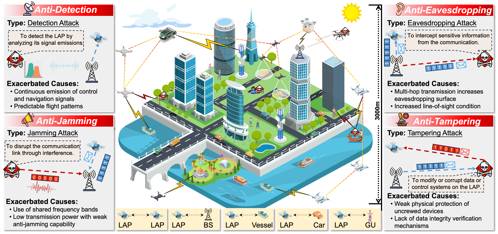
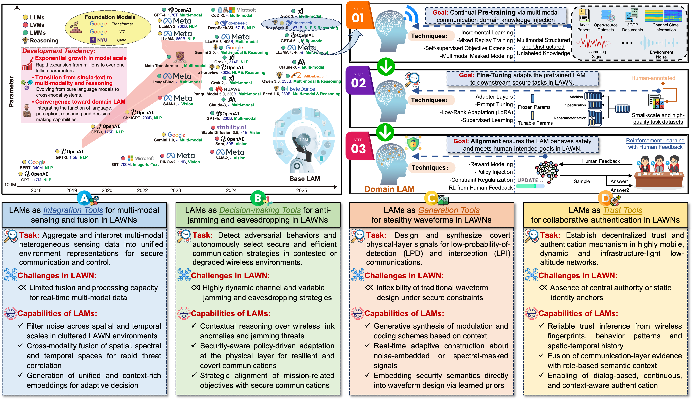
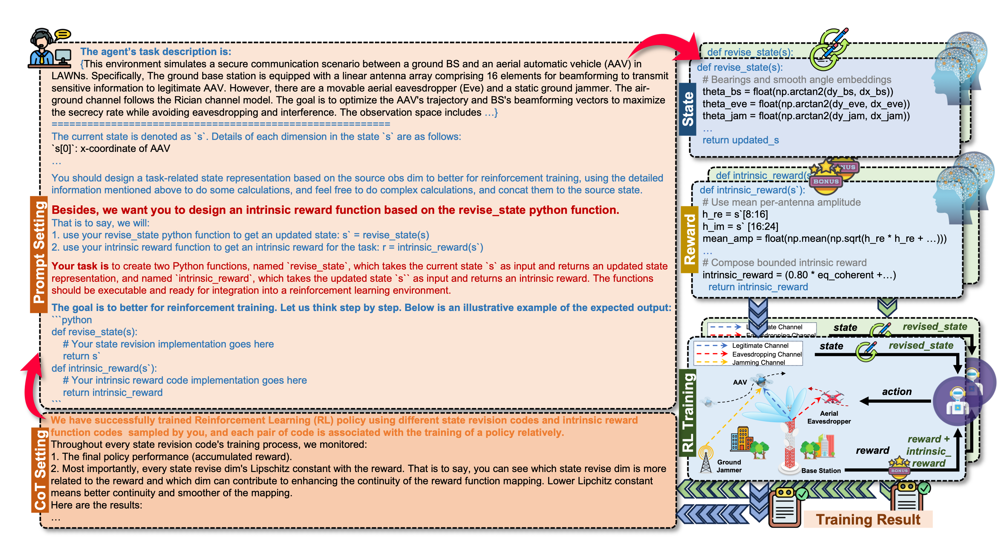

A systematic overview of communication security threats to LAPs in LAWNs, with a classification of detection, jamming, eavesdropping, and tampering attacks based on their attack types, operational objectives, and exacerbating factors.

Overview and domain adaptation of LAMs, as well as their use in enabling secure communications in LAWNs.

CoT-LLM-enhanced state representation and reward function design for RL toward secure communications in LAWNs.

Performance comparison for the proposed framework and baseline.
Considered Scenario
Our Method
Step 1: Generating multiple revised states and rewards using the LLM.
At the beginning of each iteration, the LLM receives the manually defined observation space and the task description. Based on this information, it outputs \( K \) candidate state-transformation functions and \( K \) candidate intrinsic reward functions, each of which incorporates geometric relations, distances, angles and communication-related metrics. These \( K \) candidates form a diverse set of state and reward designs to be evaluated in the current iteration.
Step 2: Training the RL agent with the \( K \) LLM-generated candidates.
For each of the \( K \) candidate designs, an RL agent is trained using the corresponding revised state and reward. During these parallel training processes, the agents interact with the LAWN environment, and their learning performances reflect how effective the different LLM-generated state features and reward structures are.
Step 3: Collecting feedback from RL training results.
After each training round, we extract performance feedback from the learning trajectories of all \( K \) candidates in order to evaluate how effective the LLM-generated state representations are. In particular, we focus on two quantities for each candidate: the reward evolution and a feature-wise Lipschitz continuity measure that captures the sensitivity of the reward to each revised state dimension.
For the \( i \)-th enhanced state component \( s'_i \) (of a given candidate), we compute an empirical Lipschitz constant along the policy trajectory as follows:
\[ L_i \approx \max_t \frac{\lvert r_t - r_{t-1} \rvert} {\lvert s'_i(t) - s'_i(t-1) \rvert + \varepsilon}, \]
where \( \varepsilon \) is a small constant to avoid numerical degeneracy. A smaller \( L_i \) indicates that the reward varies smoothly with respect to \( s'_i \) and generally leads to more stable policy updates, whereas a larger value reveals that the introduced feature may cause irregular reward fluctuations. Together with the reward trend, these Lipschitz coefficients computed for all \( K \) candidates serve as direct feedback for assessing the quality of the generated state features and are subsequently fed back to the LLM in the next refinement iteration.
Step 4: Feeding RL feedback back into the LLM for refinement.
The collected RL feedback from all \( K \) candidates is transformed into structured textual instructions and given to the LLM. Guided by these instructions, the LLM updates the state-transformation logic, simplifies or strengthens certain feature calculations, removes unstable components, and adjusts intrinsic reward terms based on the observed learning performance and stability of the RL agents.
Step 5: Repeating the loop to progressively improve performance.
The updated state and reward functions are then used to generate a new set of \( K \) candidates for the next training iteration, forming a closed-loop process. With each iteration, the LLM produces more stable and informative features, leading to smoother training curves, faster convergence, and higher final secure performance in LAWNs.
Revised State Representation and Intrisitc Reward Function
def revise_state(s: np.ndarray) -> np.ndarray:
"""
Input:
s: np.ndarray of shape (24,)
[0:2] AAV position (x, y)
[2:4] AAV->BS vector (dx, dy)
[4:6] AAV->Eve vector (dx, dy)
[6:8] AAV->Jammer vector (dx, dy)
[8:16] real parts of BS->AAV channel (8 antennas)
[16:24] imag parts of BS->AAV channel (8 antennas)
Appended features (indices after the original 24):
24: r_bs (AAV-BS distance)
25: r_eve (AAV-Eve distance)
26: r_jam (AAV-Jammer distance)
27: inv_r_bs (capped inverse distance, in [0, 1])
28: inv_r_eve (capped inverse distance, in [0, 1])
29: inv_r_jam (capped inverse distance, in [0, 1])
30: secrecy_log_margin (log((r_eve+eps)/(r_bs+eps)), clipped to [-4,4])
31: sin(theta_bs) (bearing embedding)
32: cos(theta_bs)
33: sin(theta_eve)
34: cos(theta_eve)
35: sin(theta_jam)
36: cos(theta_jam)
37: cos_delta_be (cos(theta_bs - theta_eve))
38: cos_delta_bj (cos(theta_bs - theta_jam))
39: cos_delta_ej (cos(theta_eve - theta_jam))
40: eavesdrop_alignment (0.5*(1+cos_delta_be)) in [0,1]
41: jam_alignment (0.5*(1+cos_delta_bj)) in [0,1]
42: eavesdrop_risk (inv_r_eve * eavesdrop_alignment) in [0,1]
43: jam_risk_aligned (inv_r_jam * jam_alignment) in [0,1]
44: jam_help_margin (inv_r_jam * (0.5*(1+cos_delta_ej) - jam_alignment)), clipped [-1,1]
45: x_norm (x / 100), in [-1,1]
46: y_norm (y / 100), in [-1,1]
47: boundary_safety_norm (min distance to boundary / 100), in [0,1]
48: mag_mean (mean |h_i|)
49: mag_std (std |h_i|)
50: mag_cv (mag_std / (mag_mean+eps)), clipped to [0, 5]
51: phase_concentration (|mean(exp(j*phi))|), in [0,1]
52: phase_diff_cos_mean (mean cos of adjacent phase diffs), in [-1,1]
53: bap (beam alignment potential = |sum(h)| / sum(|h|)), in [0,1]
54: eq_norm (effective link quality proxy, bounded (0,1))
55: eq_coherent (eq_norm * phase_concentration), in (0,1)
56: k_norm (bounded Rician-like K proxy k/(1+k)), in (0,1)
57: log_r_bs (log distance to BS)
58: log_r_eve (log distance to Eve)
59: log_r_jam (log distance to Jammer)
"""
s = np.asarray(s, dtype=float).flatten()
assert s.shape[0] >= 24, "Input state must have at least 24 elements."
# Use only the first 24 dims if more are provided
s = s[:24]
# Unpack geometry
x, y = float(s[0]), float(s[1])
dx_bs, dy_bs = float(s[2]), float(s[3])
dx_eve, dy_eve = float(s[4]), float(s[5])
dx_jam, dy_jam = float(s[6]), float(s[7])
# Distances and safe inverses
r_bs = float(np.hypot(dx_bs, dy_bs) + _EPS)
r_eve = float(np.hypot(dx_eve, dy_eve) + _EPS)
r_jam = float(np.hypot(dx_jam, dy_jam) + _EPS)
inv_r_bs = float(np.clip(1.0 / (r_bs + _EPS), 0.0, _INV_CAP))
inv_r_eve = float(np.clip(1.0 / (r_eve + _EPS), 0.0, _INV_CAP))
inv_r_jam = float(np.clip(1.0 / (r_jam + _EPS), 0.0, _INV_CAP))
# Bearings and smooth angle embeddings
theta_bs = float(np.arctan2(dy_bs, dx_bs))
theta_eve = float(np.arctan2(dy_eve, dx_eve))
theta_jam = float(np.arctan2(dy_jam, dx_jam))
sin_bs, cos_bs = np.sin(theta_bs), np.cos(theta_bs)
sin_eve, cos_eve = np.sin(theta_eve), np.cos(theta_eve)
sin_jam, cos_jam = np.sin(theta_jam), np.cos(theta_jam)
# Angular separations and alignments
cos_delta_be = float(np.cos(theta_bs - theta_eve))
cos_delta_bj = float(np.cos(theta_bs - theta_jam))
cos_delta_ej = float(np.cos(theta_eve - theta_jam))
eaves_align = 0.5 * (1.0 + cos_delta_be) # in [0,1]
jam_align = 0.5 * (1.0 + cos_delta_bj) # in [0,1]
# Risks and helpfulness
eaves_risk = float(inv_r_eve * eaves_align)
jam_risk_aligned = float(inv_r_jam * jam_align)
jam_help_margin = float(inv_r_jam * (0.5 * (1.0 + cos_delta_ej) - jam_align))
jam_help_margin = float(np.clip(jam_help_margin, -1.0, 1.0))
# Secrecy geometry (smooth, log-ratio)
secrecy_log_margin = float(np.log((r_eve + _EPS) / (r_bs + _EPS)))
secrecy_log_margin = float(np.clip(secrecy_log_margin, -_LOG_MARGIN_CLIP, _LOG_MARGIN_CLIP))
# Boundary proximity
x_norm = float(np.clip(x / _BOUND_HALF, -1.0, 1.0))
y_norm = float(np.clip(y / _BOUND_HALF, -1.0, 1.0))
dist_to_x_bound = max(0.0, _BOUND_HALF - abs(x))
dist_to_y_bound = max(0.0, _BOUND_HALF - abs(y))
min_dist_to_bound = min(dist_to_x_bound, dist_to_y_bound)
boundary_safety_norm = float(np.clip(min_dist_to_bound / _BOUND_HALF, 0.0, 1.0))
# Channel vector across 8 antennas
h_re = s[8:16].astype(float)
h_im = s[16:24].astype(float)
h = h_re + 1j * h_im
mags = np.abs(h)
phases = np.angle(h)
# Magnitude statistics
mag_mean = float(np.mean(mags))
mag_std = float(np.std(mags))
mag_cv = float(np.clip(mag_std / (mag_mean + _EPS), 0.0, _CV_CLIP))
# Phase concentration and smoothness across antennas
phase_concentration = float(np.abs(np.mean(np.exp(1j * phases)))) # in [0,1]
if len(phases) >= 2:
dphi = phases[1:] - phases[:-1]
dphi = (dphi + np.pi) % (2 * np.pi) - np.pi # wrap to [-pi, pi]
phase_diff_cos_mean = float(np.mean(np.cos(dphi)))
else:
phase_diff_cos_mean = 0.0
# Beam alignment potential (bounded [0,1])
sum_abs = float(np.sum(mags) + _EPS)
bap = float(np.abs(np.sum(h)) / sum_abs)
# Effective link quality proxy (bounded)
h_power = float(np.sum(mags * mags))
eq = float(h_power / (r_bs * r_bs + _EPS))
eq_norm = float(eq / (1.0 + eq)) # in (0,1)
eq_coherent = float(eq_norm * phase_concentration)
# Rician-like K proxy (bounded via k/(1+k))
h_mean = np.mean(h)
var_h = float(np.mean(np.abs(h - h_mean) ** 2) + _EPS)
k_ratio = float((np.abs(h_mean) ** 2) / var_h)
k_norm = float(k_ratio / (1.0 + k_ratio)) # in (0,1)
# Log-distances
log_r_bs = float(np.log(r_bs + _EPS))
log_r_eve = float(np.log(r_eve + _EPS))
log_r_jam = float(np.log(r_jam + _EPS))
extras = np.array([
r_bs, r_eve, r_jam, # 24..26
inv_r_bs, inv_r_eve, inv_r_jam, # 27..29
secrecy_log_margin, # 30
sin_bs, cos_bs, # 31..32
sin_eve, cos_eve, # 33..34
sin_jam, cos_jam, # 35..36
cos_delta_be, cos_delta_bj, cos_delta_ej, # 37..39
eaves_align, jam_align, # 40..41
eaves_risk, jam_risk_aligned, # 42..43
jam_help_margin, # 44
x_norm, y_norm, # 45..46
boundary_safety_norm, # 47
mag_mean, mag_std, mag_cv, # 48..50
phase_concentration, # 51
phase_diff_cos_mean, # 52
bap, # 53
eq_norm, eq_coherent, # 54..55
k_norm, # 56
log_r_bs, log_r_eve, log_r_jam # 57..59
], dtype=float)
updated_s = np.concatenate([s, extras], axis=0)
return updated_s
def intrinsic_reward(updated_s: np.ndarray) -> float:
"""
Intrinsic reward shaping using both original dims (0..23) and engineered features (24..).
Emphasizes bounded, low-variance proxies that align with secrecy-rate optimization.
Positive terms:
- eq_coherent (smooth, bounded legitimate link quality with phase coherence)
- secrecy_log_margin (Eve farther than BS => positive)
- boundary_safety_norm (stay within safe flight region)
- jam_help_margin (jammer hurts Eve more than BS)
- bap (beam alignment potential across antennas)
- mean amplitude across original channel dims (small stabilizer)
Negative terms:
- eavesdrop_risk (close and aligned Eve)
- jam_risk_aligned (close and aligned jammer to BS-AAV direction)
- mag_cv (antenna magnitude imbalance)
The result is clipped to [-1, 1] and will be scaled by 0.1 when added to the task reward.
"""
u = np.asarray(updated_s, dtype=float).flatten()
assert u.shape[0] >= 60, "updated_s must include appended features from revise_state."
# Use ORIGINAL dims (stable stabilizer): mean per-antenna amplitude
h_re = u[8:16]
h_im = u[16:24]
mean_amp = float(np.mean(np.sqrt(h_re * h_re + h_im * h_im) + _EPS))
# Fetch engineered features (indices per mapping above)
eq_coherent = float(u[55]) # (0,1)
secrecy_log_margin = float(u[30]) # clipped [-4,4]
boundary_safety = float(u[47]) # [0,1]
jam_help_margin = float(u[44]) # [-1,1]
bap = float(u[53]) # [0,1]
eaves_risk = float(u[42]) # [0,1]
jam_risk = float(u[43]) # [0,1]
mag_cv = float(u[50]) # [0,5]
# Compose bounded intrinsic reward (weights chosen to avoid saturation)
intr = (
0.80 * eq_coherent +
0.50 * np.tanh(secrecy_log_margin) +
0.15 * boundary_safety +
0.15 * np.tanh(jam_help_margin) +
0.10 * bap +
0.05 * np.tanh(mean_amp) -
0.25 * np.tanh(2.0 * eaves_risk) -
0.20 * np.tanh(2.0 * jam_risk) -
0.10 * mag_cv
)
return float(np.clip(intr, -1.0, 1.0))
BibTeX
@article{Zhang2026,
title={Large AI Model-Enabled Secure Communications in Low-Altitude Wireless Networks: Concepts, Perspectives and Case Study},
author={Chuang Zhang and Geng Sun and Yijing Lin and Weijie Yuan and Sinem Coleri and Dusit Niyato and Tony Q. S. Quek},
journal={arXiv: 2508.00256},
year={2025},
url={https://arxiv.org/abs/2508.00256}
}